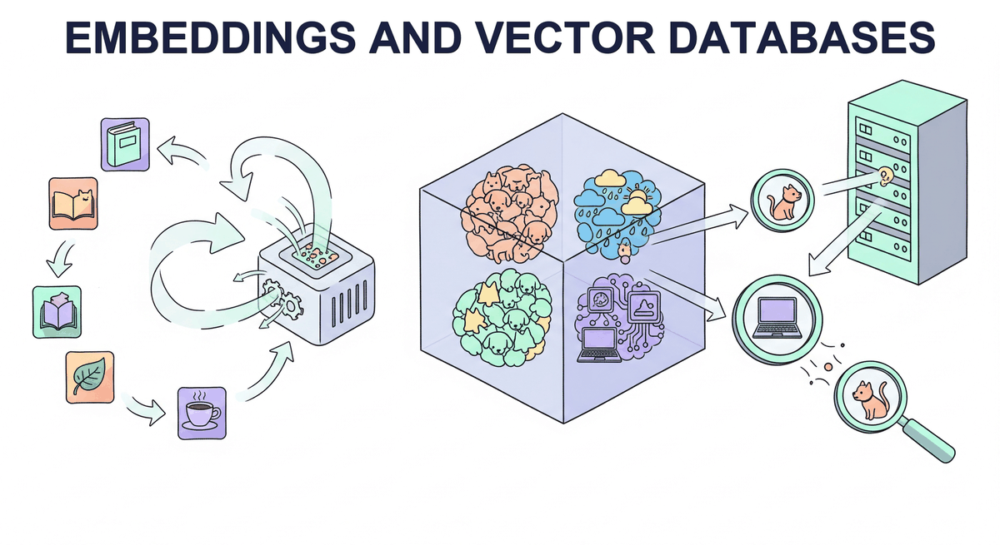

"You shall know a word by the company it keeps."
Vec, Socially Astute AI Agent
Part IV adapted the model. Part V gives the model memory. This chapter is the foundation: embeddings (how text becomes vectors), vector databases (how vectors become searchable), and semantic search (how the two combine into "find the most relevant chunk for this query"). Everything in Chapter 23 (RAG) and Chapter 24 (Conversational AI) sits on this layer.
Chapter Overview
Retrieval-augmented generation (RAG) has become the dominant pattern for grounding LLM outputs in factual, up-to-date information. At the foundation of every RAG system lies a trio of interconnected technologies: embedding models that convert text into dense vector representations, vector databases that store and index those vectors for efficient search, and document processing pipelines that prepare raw content for ingestion.
This chapter provides a comprehensive, bottom-up treatment of these foundational components. It begins with the theory and practice of text embedding models, covering the evolution from word-level embeddings to modern sentence transformers and the training objectives that produce high-quality representations. It then examines the data structures and algorithms that make approximate nearest neighbor search practical at scale, including HNSW graphs, inverted file indexes, and product quantization (techniques that parallel the optimization strategies used in LLM inference).
The chapter proceeds to survey the rapidly growing ecosystem of vector database systems, comparing purpose-built solutions like Pinecone, Weaviate, and Qdrant with library-based approaches such as FAISS and embedded databases like ChromaDB. Finally, it addresses the critical (and often overlooked) challenge of document processing and chunking, where poor design decisions can undermine even the most sophisticated retrieval infrastructure.
By the end of this chapter, you will be able to select and fine-tune embedding models for specific domains, design vector indexes that balance recall with latency, deploy and operate vector database systems in production applications, and build document processing pipelines that maximize retrieval quality.
Embeddings transform text into dense vectors that capture semantic meaning, and vector databases make those vectors searchable at scale. This chapter provides the retrieval infrastructure that powers RAG systems in Chapter 23 and grounds the conversational AI systems in Chapter 24.
- Explain the evolution from word embeddings (Word2Vec, GloVe) to sentence-level embeddings (Sentence-BERT, E5, GTE)
- Describe contrastive learning objectives and hard negative mining strategies for training embedding models (building on the transformer encoder architecture)
- Compare cosine similarity, dot product, and Euclidean distance as vector similarity metrics
- Explain HNSW graph construction and search, IVF partitioning, and Product Quantization at a technical level
- Evaluate vector database systems (Pinecone, Weaviate, Qdrant, Milvus, ChromaDB, pgvector) for different deployment scenarios
- Implement hybrid search combining dense vector retrieval with sparse keyword matching using reciprocal rank fusion
- Design document chunking strategies (fixed-size, recursive, semantic, structure-aware) appropriate for different content types, informed by tokenization mechanics
- Build end-to-end RAG ETL pipelines with document loading, parsing, chunking, embedding, and indexing
- Use MTEB benchmarks and custom evaluation sets to select embedding models for specific domains
- Implement incremental indexing and document versioning for production vector search systems
- Chapter 1: NLP & Text Representation (vector spaces, similarity metrics)
- Chapter 3: The Transformer Architecture (attention, encoder vs. decoder models)
- Chapter 11: LLM APIs (working with embedding API endpoints)
- Comfortable with Python, NumPy, and basic data structures (graphs, hash tables, trees)
- Familiarity with database concepts (indexing, queries, CRUD operations)
Sections
- 31.1 Text Embedding Models & Training Embeddings are the bridge between human language and machine computation. Entry
- 31.2 Vector Index Data Structures & Algorithms Finding the most similar vectors in a collection of millions is a computational challenge that brute-force search cannot solve at scale. Intermediate
- 31.3 Vector Database Systems A vector database is more than an ANN index with an API. Intermediate
- 31.4 Document Processing & Chunking The quality of your RAG system is bounded by the quality of your chunks. Advanced
- 31.4b Production RAG Pipelines, Evaluation & Topic Modeling Incremental indexing, metadata enrichment, chunking evaluation against retrieval metrics, and BERTopic topic discovery from the same embeddings. Advanced
- 31.5 Vision-Based Document Retrieval Traditional document retrieval is like a librarian who can only search a typed index of keywords. Advanced
What's Next?
In the next chapter, Chapter 32: Retrieval-Augmented Generation (RAG), we build complete RAG pipelines that ground LLM responses in real, up-to-date information.